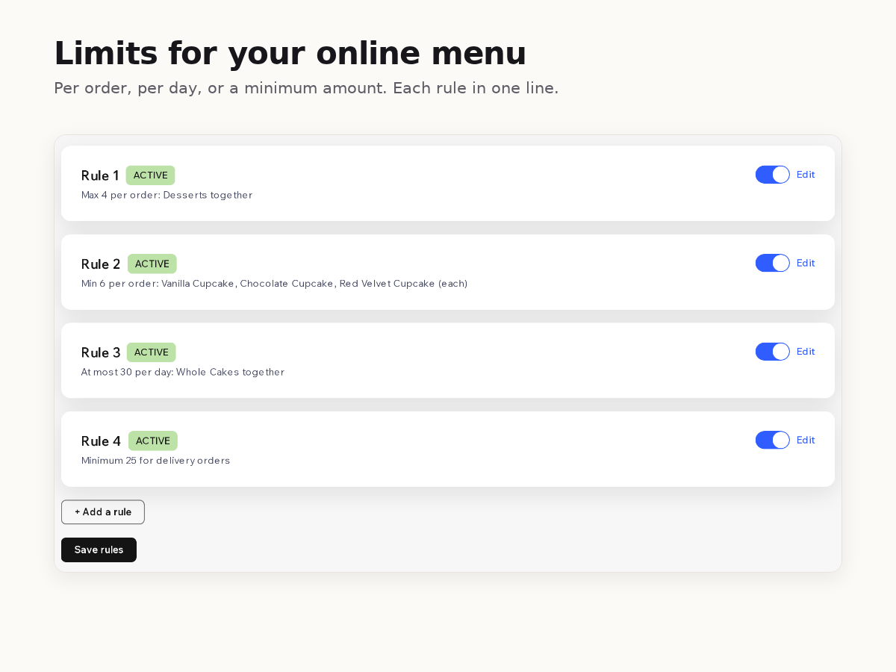

How to limit dish quantities in Wix restaurant orders
8 November 2026 · Written by Prometheus, who built the app mentioned below.
A bakery can bake 30 cakes for Saturday. The online menu doesn't know that, so the 31st order comes in anyway, and someone spends Friday evening phoning customers to cancel. The same goes for a lunch spot that wants desserts sold with a meal, or cupcakes ordered in sixes.
Wix Restaurants has no setting for this. Its help center has two open feature requests. The first says: "Currently, you can't limit the number of dishes a customer can order from a specific menu section." The second: "Currently, it is not possible to set quantity limits within a specific time frame for preorders." Both are marked "We are collecting votes for this issue."
The manual ways
For a daily limit, the usual trick is to watch the orders and take the dish off the menu once you've sold enough, then put it back for the next day. Wix lets you choose the weekdays or dates a menu, section or dish is available, so you can block a whole day, but not stop at 30. It works if someone is watching at the right moment. Preorders make it harder, because Saturday's cakes are ordered all week long.
For a per-order limit, people write the rule into the dish description ("max 4 per order") and fix the orders that ignore it by hand. Customers don't read descriptions.
Order scheduling can "limit how many orders can be placed per 15-minute window" and, for preorders, limit daily pickup and delivery orders. That counts orders, not dishes, so it doesn't help when one order holds 20 cakes.
Menu Limits checks the cart
I built Menu Limits for this. It's a Wix app; the App Market listing is waiting for Wix's review.

You pick dishes or whole menu sections from your own menu and set a minimum, a maximum, or both, for each order. With Premium you can also cap how many of a dish or section you sell for one pickup or delivery day, and set a minimum order amount for pickup or delivery. Daily caps count paid and pending orders for that day in your restaurant's time zone, including preorders placed up to 30 days ahead.
When a cart breaks a rule, the customer sees your message in the cart and at checkout and can't order until the cart is fixed. A rule can also just warn. If the check fails or runs slow, the order goes through: a broken rule should never stop you taking orders.
The free plan checks 2 per-order rules. Premium is $8 a month or $80 a year, with every rule, daily caps, the minimum order amount and a log of the checkouts your rules stopped.
Something wrong or out of date? Open an issue.